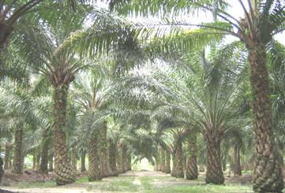
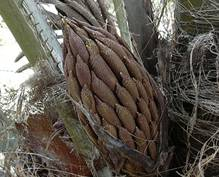
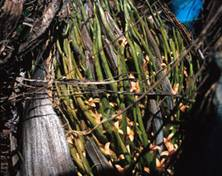
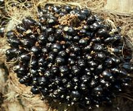
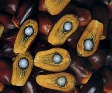
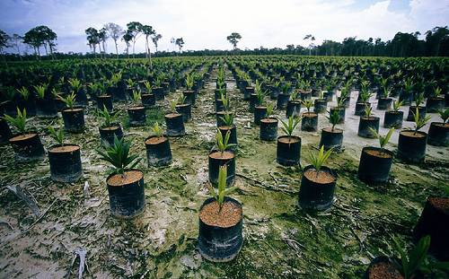

HORT 282 :: Lecture 20 :: BHENDI (Abelmoschus esculentus)

OIL PALM
(Elaeis guineensis, Palmae)
 The oil palm tree is a tropical plant which commonly grows in warm climates at altitudes of less than 1,600 feet above sea level. The species, Elaeis oleifera (H.B.K) Cortes is native of America; and the species Elaeis guineensis Jacq. which originated in the Gulf of Guinea in West Africa (hence its scientific name) is better known as the African oil palm.
This tree produces one of the most popular edible oils in the world - a versatile oil of superb nutritional value. It is the most prolific of all oil plants and in commercial terms the one which offers major prospects of development.
Botany
Plant
Oil palm can reach 60-80 ft in height in nature, but is rarely more than 20 or 30 ft in cultivation. Leaf bases are persistent for years, and prominent leaf scars are arranged spirally on the trunk of mature palms where bases have fallen. Leaves are up to 25 ft in length, with leaflets numbering 200-300 per leaf, about 3-4 ft long and 1.5 - 2.0" wide, with entire margins. Leaflets cover the distal 2/3 of the leaf, and the lower 1/3 is spined with spines increasing in length acropetally.
Flowers
Oil palms are monoecious, producing male and female inflorescences in leaf axils. The inflorescence of both sexes is a compound spadix with 100-200 branches, initially enclosed in a spathe or bract that splits 2 weeks prior to anthesis.
Fruit
As in many palms, fruits are drupes. The mesocarp and endocarp vary in thickness, with Dura types having thick endocarps and less mesocarp, and Tenera types the opposite. The exocarp color is green changing to orange at maturity in virescens types, and orange with brown or black cheek colors in the Nigrescens types. Fruit range in size from <1" to 2", and are obovoid in shape. The mesocarp, from which palm oil is derived, is fibrous and oily, and the seed is opaque white, encased in a brown endocarp; palm kernel oil is derived from seeds. The female inflorescence contains 200-300 fruit, and fruit set is 50-70%. Fruit ripen about 5-6 months after pollination.
 |
 |
 |
 |
Climate and Soil
Oil palm grows best in areas with a mean maximum temperature of 30-32 ºC and on an average of at least five hours of sunlight. It can be grown in areas, which receive well-distributed annual rainfall of 200 cm or more. However, it can tolerate two to four months of dry spell.
Soil - wide range of soil types provided good drainage and pH between 4 and 7; tolerates periodic flooding or a high water table; many soils are alluvial in nature. The adult palms can withstand occasional water logging, but frequently waterlogged, extremely sandy and hard lateritic soils should be avoided. Irrigation is generally not practiced.
Varieties
There are three naturally occurring forms of the oil palm fruit, termed Dura, Tenera, and Pisifera. Most cultivars are the Tenera form which produces fruit with higher oil content. The only variety recommended for commercial cultivation is Tenera, which is a hybrid between Dura and Pisifera.
Nursery practices
The fruits are separated from the bunch and seeds are extracted by scraping off the exocarp and mesocarp with a knife, or by retting in water. The seeds are then dried by spreading them on concrete or wooden floors under shade for two days. Such seeds can be stored for 3-9 months at about 27 ºC without much reduction in viability.
Seeds are soaked in water for five days, changing the water daily. Thereafter, the seeds are spread out to dry for 24 hours. The dried seeds are put in polythene bags and placed in germinator maintained at a temperature of 40 ºC. After 80 days, the seeds are removed from polythene bags, soaked in water for 5 days changing the water daily and dried in the shade for two hours. The seeds are then put back into bags and kept in a cool place in order to maintain the moisture content. Germination commences in about 10-12 days. The percentage of germination obtainable by this method is 90-95.
Raising nursery
Polybags (preferably black) of 400-500 gauge measuring 40 x 35 cm are used. The bags are filled with topsoil and compost and are arranged at a spacing of 45 x 45 cm and one sprouted seed is dibbled per bag. A good mulching during summer is desirable.

Watering the seedlings weekly thrice is recommended. A fertilizer mixture containing 15 g N, 15 g P2O5 and 6 g K2O at the rate of 8 g in five litres of water for 100 seedlings may be applied when the seedlings are two month and eight month old.
Planting
Oil palm is planted in the main field in triangular system at spacing of 9 m accommodating 140 palms per ha. Planting is preferably done at the onset of monsoon during May-June. The polythene bag is torn open and the entire ball of earth is buried in the pit (50 x 50 x 50 cm) and levelled.
Leaf pruning
Dead and diseased leaves and all inflorescences should be cut off regularly up to three years after planting. When the palms are yielding, judicious pruning to retain about 40 leaves on the crown is advocated. It is necessary to remove some of the leaves while harvesting. In such cases, care should be taken to avoid over pruning. In addition, all dead and excess leaves should be cut off and crown cleaned at least once in a year, usually during the dry season.
Pollination
Oil palm is a cross-pollinated crop. Assisted pollination is done to ensure fertilization of all female flowers. However, this is not necessary if the pollination weevil Elaedobius kamerunicus is introduced in the plantation. They congregate and multiply on male inflorescence during flower opening. The weevils also visit the female flowers and pollinate them effectively.
Manuring
The following fertilizer schedule is considered satisfactory for oil palm.
N:P2O5:K2O |
g/palm/year |
First year |
400:200:400 |
Second year |
800:400:800 |
Third year onwards |
1200:600:1200 |
Mg application is necessary only if deficiency symptoms are noticed. Fertilizers are preferably applied in two equal split doses (May and September), within 2 m diameter around the palm and forked in. Supply of sufficient quantities of green leaf or compost is advantageous, especially where the soil is poor in organic matter.
Weed management
The field has to be regularly maintained to allow access for harvesting and palm inspection. The weeded circle should be sufficiently kept clear of vegetation for loose fruit collection. It is also extremely important to reduce direct weed competition in young palms. This can be controlled manually or chemically using herbicide.
Pruning and Training
Old leaves are pruned off to facilitate access to the bunch at harvest. When palms reach heights of 20-30 ft, they become difficult to harvest, and are often injected with an herbicide to kill them or bulldozed down. New trees are planted among the dead and rotting trunks.
Pest management
Rhinoceros beetle
The pest causes severe damage to emerging fronds and spindle. The adult beetle feeds on the softer tissue of the rachis, resulting in snapping off of the fronds and spears at the feeding sites. Field sanitation and elimination of breeding sites are essential components of the pest management operation. This pest can be suppressed by using the virus Baculovirus oryctes.
Red palm weevil
This is a major pest of oil palm in India. These weevils lay their eggs at the cut end of petioles or other wounds. The emerging larvae tunnel into the crown and feed on the growing tissues. Palms infested by red palm weevil start wilting and leaves show gradually increasing chlorosis and fracture in strong winds. If detected early, treatment of affected palm with 0.2% solution of endosulfan or 1% carbaryl would save the palms.
Birds
Many birds such as the forest crow, the house crow and the common Indian myna cause severe damage to oil palm fruit bunches. These birds feed on the mesocarp of the oil palm fruits. The damage can be minimized by scaring the birds and covering the ripe bunch with wire net, 150 days after fruit set.
Disease management
Anthracnose
This disease occurs in the nursery. It is recognized by regular or irregular brown to black leaf blotches surrounded by yellow haloes, which develop along the margin, centre or tip of the leaves. It causes heavy seedling loss. The disease can be controlled by spraying mancozeb or captan at the rate of 200 g/100 litres of water. Copper fungicides should not be used because of the extreme susceptibility of oil palm seedlings to copper burn (scorching).
Spear rot
This is noticed to affect oil palms of all ages. The incidence is less than one per cent. Yellowing starts from tip of the innermost whorl of leaves. Small lesions occur at the distal portions of spear and rotting extends downwards. As the disease advances, new leaves become rudimentary and show rotting. General decline in vigour and production is then noticed. Occurrence of spear rot without yellowing has also been noticed. Distinguishable marginal yellowing of leaflets and sudden drying of leaves showing yellowing are other symptoms. Rouging of all the affected palms may be adopted to prevent further spread of the disease. In early stages of the disease, the affected portions of leaves may be removed and burnt.
Bunch failure
Sparse or no fruit set followed by complete drying or rotting of the affected bunches are the typical symptoms. The extent of incidence can be up to 20%. This malady is generally attributed to excess pruning, mutual shading, under pollination, moisture stress and unhygienic conditions. The situation can be improved by assisted pollination as well as by adopting hygienic measures like removal of infected bunches and dry male inflorescence.
Harvesting
As fruit ripen, they change from black (or green in virescens types) to orange, but have varying degrees of black cheek color depending on light exposure and cultivar. However, fruit abscission is the best index of bunch ripeness.
First harvest can be taken 3.5 to 4 years after planting. When a few ripe fruits are loose / fall off, the bunch is ready for harvesting. Processing over-ripe fruits reduces quantity and quality of oil.
A chisel is used for harvesting bunches from young palms. The stalk of the bunch is struck hard with the chisel to cut off and push the bunch out. When the palms become taller (from 10 year onwards) a harvesting hook has to be used. When the palms are too tall, it is necessary to climb the palms for harvesting. Each tree must be visited every 10-15 days as bunches ripen throughout the year.
Processing
Oil extraction is a complex process, carried out by large mills that may process up to 60 tons of fruit per hour, or by small scale mills in rural villages that produce only about 1 ton of oil in an 8 hour shift. Oil extraction from fruit follows the same basic steps in either case:
1. Steam sterilization of bunches (inactivates lipase enzymes and kills microorganisms that produce free fatty acids, reducing oil quality)
2. Stripping fruit from bunches
3. Crushing, digestion, and heating of the fruit
4. Oil extraction from macerated fruit (hydraulic pressing)
5. Palm oil clarification
6. Separating fiber from the endocarp
7. Drying, grading, and cracking of the endocarp
8. Separating the endocarp from the kernel
9. Kernel drying and packing
The product of step 5 is termed crude palm oil, which must be refined to remove pigments, free fatty acids, and phospholipids, and to deodorize it. The final product, termed "refined, bleached, deodorized" palm oil is produced.
Dietary value, per 100 gram edible portion
|
Oil palm fruit |
Palm oil |
Water (%) |
26 |
0.5 |
Calories |
540 |
878 |
Protein (%) |
1.9 |
0 |
Fat (%) |
58.4 |
99.1 |
Carbohydrates (%) |
12.5 |
0.4 |
Crude Fiber (%) |
3.2 |
0 |
|
% of US RDA* |
|
Vitamin A |
3.5 |
2.3 |
Thiamin, B1 |
13.3 |
2.0 |
Riboflavin, B2 |
5.6 |
Trace |
Niacin |
7.0 |
--- |
Vitamin C |
26.7 |
--- |
Calcium |
10.3 |
0.9 |
Phosphorus |
5.9 |
1.0 |
Iron |
45 |
55 |
Sodium |
2.4 |
--- |
Potassium |
5.3 |
--- |
- Pollination of oil palm is aided by _____________
- Botanical name of oil palm is __________
- Propagation materials for oil palm is ______________
- Type of seed in oil palm is _______________
- Fruit is botanically called as _____________
| Download this lecture as PDF here |